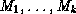
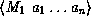
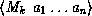
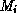
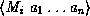
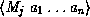

Common Lisp the Language, 2nd Edition


Next: Meta-objects
Up: Method Selection and
Previous: Declarative Method Combination

The
Common Lisp Object System provides a set of built-in method combination types. To
specify that a generic function is to use one of these method
combination types, the name of the method combination type is given as
the argument to the :method-combination option to
defgeneric or to the :method-combination option to any of the
other forms that specify generic function options.
The names of the built-in method combination types are
+, and, append, list, max, min,
nconc, or, progn, and standard.
The semantics of the standard built-in method combination type were
described in section 28.1.7.2. The other
built-in method combination types are called simple built-in method
combination types.
The simple built-in method combination types act as though they were
defined by the short form of define-method-combination. They
recognize two roles for methods:
- An :around method has the keyword symbol
:around as its sole qualifier. The meaning of :around
methods is the same as in standard method combination. Use of the
functions call-next-method and next-method-p is supported
in :around methods.
- A primary method has the name of the method combination
type as its sole qualifier. For example, the built-in method
combination type and recognizes methods whose sole qualifier is
and; these are primary methods. Use of the functions
call-next-method and next-method-p is not supported in primary
methods.
The semantics of the simple built-in method combination types are as
follows:
-
If there are any :around methods, the most specific :around
method is called. It supplies the value or values of the generic function.
- Inside the body of an :around method, the function
call-next-method can be used to call the next method. The
generic function no-next-method is invoked if
call-next-method is used and there is no applicable method to call.
The function next-method-p may be used to determine whether a
next method exists. When the next method returns, the :around
method can execute more code, perhaps based on the returned value or
values.
- If an :around method invokes
call-next-method, the next most specific :around method is
called, if one is applicable. If there are no :around methods
or if call-next-method is called by the least specific
:around method, a Lisp form derived from the name of the built-in
method combination type and from the list of applicable primary
methods is evaluated to produce the value of the generic function.
Suppose the name of the method combination type is operator
and the call to the generic function is of the form
(generic-function ... )
Let  be the applicable primary methods
in order; then the derived Lisp form is
(operator 
... )
If the expression is
evaluated, the method  will be applied to the arguments
.
For example,
if operator is or,
the expression  is
evaluated only if ,
1 <= j < i, returned nil.
The default order for the primary methods is
:most-specific-first. However, the order can be reversed by supplying
:most-specific-last as the second argument to the
:method-combination option.
The simple built-in method combination types require exactly one qualifier per
method. An error is signaled if there are applicable methods with no
qualifiers or with qualifiers that are not supported by the method
combination type. An error is signaled if there are applicable :around
methods and no applicable primary methods.

Next: Meta-objects
Up: Method Selection and
Previous: Declarative Method Combination
AI.Repository@cs.cmu.edu